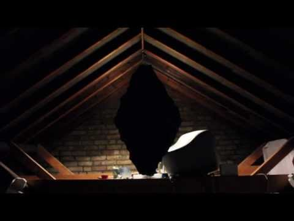

Ex Caelis Oblata
Final dissertation work for the BMus in Music Computing at Goldsmiths. Available in PDF at academia.edu. Installation piece built on research in sculptural encoding of music, exploring the human experiences of mystery, awe and religious reverence and focusing on the concepts of meaning in relics and cultural artefacts, aesthetics of monolithic art.